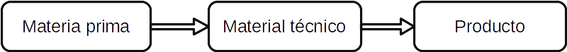

Classificació de materials¶
Els materials es poden classificar segons molts criteris. Aquesta unitat estudiarà els materials segons el seu processament, depenent de l’origen de la matèria primera, dels tipus de materials i de la seva classificació segons l’impacte que tenen sobre el medi ambient.
Índex de contingut:
Classificació segons el nivell de processament¶
{kind=link}

Els materials segueixen un procés de transformació des de ser extrets fins que es converteixen en un objecte útil.
- Matèria primera
És un material primari que es troba a la natura. La matèria primera es pot transformar en materials tècnics per fabricar productes.
Exemples de matèries primeres són: llana, pell, seda, cotó, fusta, ferro, coure, oli, argila, làtex.
- Material tècnic
Aquests són els materials obtinguts mitjançant la transformació de les matèries primeres. S'utilitzen per fabricar productes acabats.
Alguns exemples de materials tècnics que s’obtenen de matèries primeres:
- Des de la fusta, es fabriquen taulons sòlids, cintes, serradures, taulons d’aglomerat, paper, cartró.
- Des del cotó els fils, les cordes, els teixits, el feltre.
- Des de tubs de ferro, plaques, angles, cargols, bigues, ungles, cables es fabriquen.
- Des dels fils de plàstic, teixits, cordes, es fabriquen fulls.
- Des de la pell, es fabrica cuir.
- Producte acabat
Aquests són els productes que podem comprar a les botigues. Es componen de diversos materials tècnics.
Exemples de productes acabats i els materials que utilitzen.
- Pantalons: fabricat amb tela i fil de cotó, fils de plàstic, reblons i cremallera de llautó, etiqueta de cuir.
- Càtedra: fabricat amb potes i cargols de ferro, tacos, teixits i pintures de plàstic, seient i suport de la fusta.
- Prestatgeria del saló: fabricat amb fusta aglomerada, vidre de la sorra, ungles i cargols de ferro, tiradors de plàstic.
Classificació segons l’origen de la matèria primera¶
Els materials es poden classificar segons l’origen de la matèria primera:
Classificació segons el tipus de material¶
Podem classificar els materials que associen aquells que les propietats són similars. Per exemple, metalls, materials plàstics, etc.
Segons aquesta classificació, tenim els materials següents:
: Ref: `Material-Petreos '
Provenen de les pedres o de les sorres de la natura. Es poden classificar en els grups següents.
- Natural: marbre, granit, pissarra, pedra calcària, gres.
- Barmers: guix, ciment, formigó.
- Ceràmica: argila, Loza, Gres, porcellana.
- Vidre.
: Ref: `Material-Madera '
Són de fusta massissa o derivats de fusta premsada.
- Fusta tallada: suau i dura.
- Chapada Wood: contraplacat, fusta laminada.
- Fusta d’aglomerat: aglomerat, DM.
- Paper i cartró.
: Ref: `Material-Textils '
Són materials que s’agrupen dels teixits utilitzats en roba o mobles, a una bola de cuir o a l’espelma d’un vaixell. Tot i que el seu origen és molt diferent, tothom té la seva gran flexibilitat i els processos cosits i enganxats que s’utilitzen en la fabricació.
- Fils: seda, llana, cotó, polièster.
- Teixits: texans, jersei de llana, espelma de vaixell.
- Cuir: sabates, guants, butaques, cinturons, contenidors de fluids.
: Ref: `Material-metalls '
S’extreuen per òxids i sulfurs de calefacció que es troben a la natura en forma de roques. Es poden classificar en els grups següents.
- Ferro -basat: ferro, acer, acer inoxidable.
- Basat en coure: coure, llautó, bronze.
- Metalls lleugers: alumini, liti, magnesi.
- Metalls pesants: plom, crom, cadmi, mercuri.
- Metalls preciosos: or, plata, rodi, platí.
: Ref: `Material-Platals '
Provenen de gas natural o petroli refinat. Es poden classificar en els grups següents.
- Termoplàstic: PET, polietilè, PVC, polipropilè, poliestirè, niló, tefló.
- Termostable: Baquelita, melamina, resina epoxi.
- Elastomeres: làtex, neoprè, silicones, cautxú sintètic.
Exercicis¶
Classifiqueu els materials següents segons el seu origen mineral, vegetal o animal.
- Cinturó de cuir
- Mitjons de cotó
- Malles de polièster
- Rajoles i maons
- Corbata de seda
- Taulell de marbre
- Taula de fusta
- Jersei de llana
- Porta de ferro
- Finestra d'alumini
- Camisa de lli
- Espacres de cànem
- Terra terratzo
Cerqueu cinc objectes quotidians del vostre entorn fabricats amb cadascun d’aquests tipus de materials:
Objectes metàl·lics
Objectes de plàstic
Objectes de fusta.
Materials del ventre.
Objectes amb materials d’origen animal.
Cerqueu a Internet cinc objectes quotidians que es troben al vostre entorn i que es fabriquen amb materials tòxics.